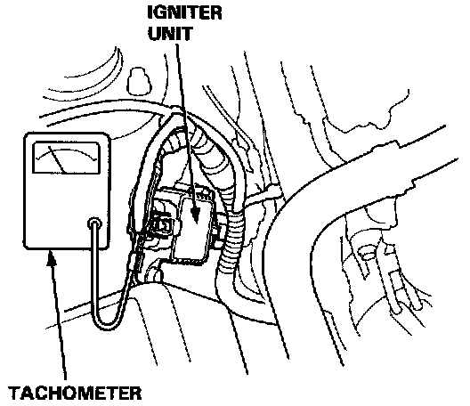
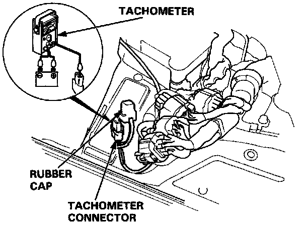
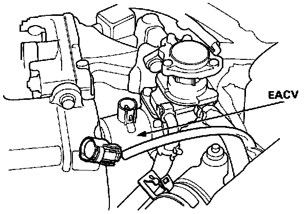
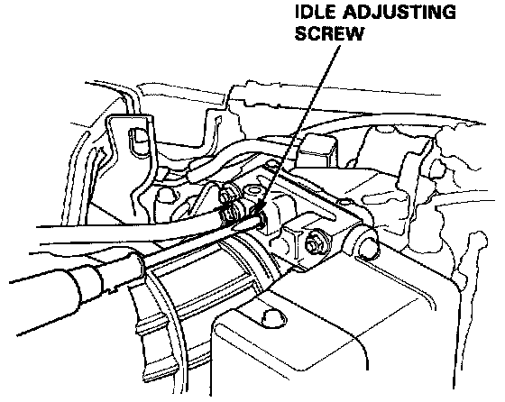

Idle Speed: Adjustments
Idle Speed Inspection/AdjustmentNOTE: (CANADA) Pull the parking brake lever up. Start the engine, then check that the headlights are OFF.
1. Start the engine and warm it up to normal operating temperature (the cooling fan comes on).
2. Connect a tachometer.

- Connect a tachometer to loop of igniter unit.

- Remove the rubber cap from the tachometer connector and connect a tachometer.

3. Disconnect the 2P connector from the EACV.
4. Start the engine with the accelerator pedal slightly depressed. Stabilize the rpm at 1000, then slowly release the pedal until the engine idles.
5. Check idling in no-load conditions: headlights, blower fan, rear defogger, cooling fan, and air conditioner are not operating.
Idle speed should be:
Manual: 450 ± 50 rpm
Automatic: 480 ± 50 rpm (in [N] or [P]

Adjust the idle speed, if necessary, by turning the idle adjusting screw.
6. Turn the ignition switch OFF.
7. Reconnect the 2P connector on the EACV, then remove No. 15 fuse in the under-dash fuse box for 10 seconds to reset the ECU.
8. Restart and idle the engine with no-load conditions for one minute, then check the idle speed.
NOTE: (CANADA) Pull the parking brake lever up. Start the engine, then check that the headlights are off.
Idle speed should be:
Manual 650 ± 50 rpm
Automatic: 600 ± 50 rpm (in [N] or [P]